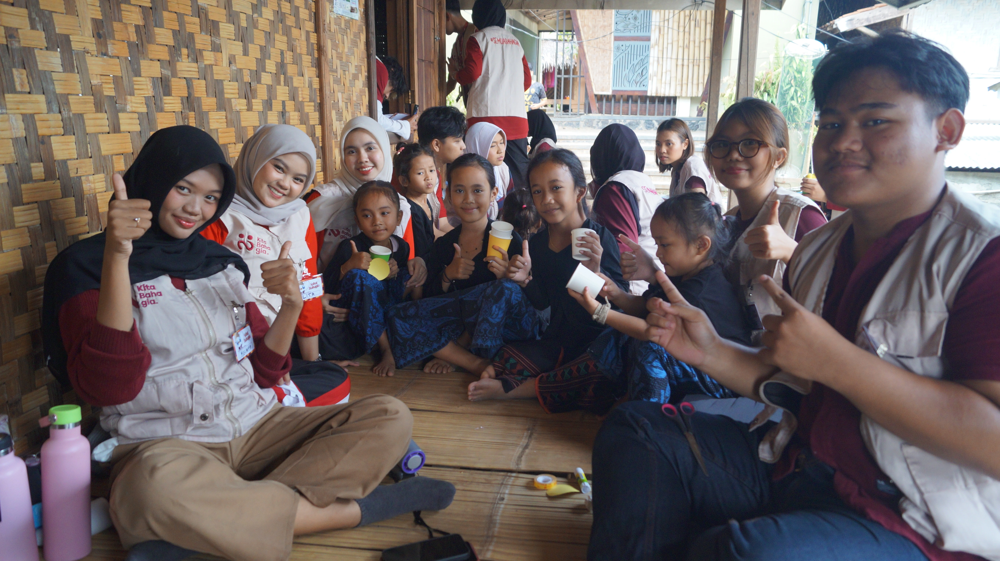
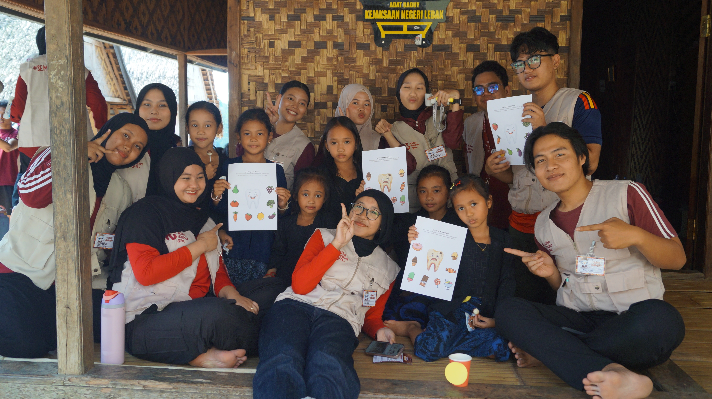
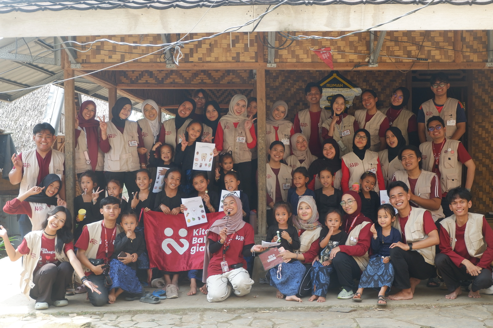

Bahagia terasasaat kita hadirbersama
Ikuti kegiatan sosial, belajar bersama, dan eksplorasi komunitas. Pilih agenda, lihat biaya serta persiapannya, lalu daftar.
Ikuti kegiatan sosial, belajar bersama, dan eksplorasi komunitas. Pilih agenda, lihat biaya serta persiapannya, lalu daftar.

Ikuti kegiatan sosial, belajar bersama, dan eksplorasi komunitas. Pilih agenda, lihat biaya serta persiapannya, lalu daftar.
.webp)
Ikuti kegiatan sosial, belajar bersama, dan eksplorasi komunitas. Pilih agenda, lihat biaya serta persiapannya, lalu daftar.
Kita Bahagia tumbuh dari orang-orang yang mau datang, saling mengenal, dan membuat kegiatan sederhana terasa berarti.

Ada yang ringan dan hangat, ada yang lebih dalam dan berdampak. Semuanya punya satu kesamaan: hadir dengan sungguh-sungguh.

Kegiatan yang sering dimulai dari hal kecil, lalu jadi momen yang membuat orang datang kembali.
Lihat detail →
Program yang memberi ruang pada ide, interaksi, dan kebersamaan tanpa harus selalu formal.
Lihat detail →
Kegiatan yang memberi dampak nyata bagi masyarakat, sekaligus memberi ruang bagi relawan untuk ikut hadir.
Lihat detail →Pilih kegiatan yang terasa cocok. Detail waktu, lokasi, dan biaya tersedia sebelum kamu mendaftar.
Jadwal kegiatan berikutnya akan segera hadir. Pantau halaman jadwal untuk informasi terbaru.
Lihat halaman jadwal →Catatan dari perjalanan, pertemuan, dan momen kecil yang membuat sebuah kegiatan terus hidup dalam ingatan.

Catatan tentang perjalanan, pertemuan, dan ruang untuk saling mengenal yang tumbuh sepanjang kegiatan.
Baca kisah
Sebuah catatan dari hari yang diisi dengan belajar bersama, percakapan, dan pengalaman yang dibawa pulang.
Baca kisah.jpg)
Catatan tentang persiapan aktivitas, pertemuan antarpeserta, dan refleksi kecil seusai kegiatan.
Baca kisahTemukan agenda yang cocok atau ikuti kabar berikutnya di channel WhatsApp kami.